Hiking | Kori Trail(Nho Ta)
 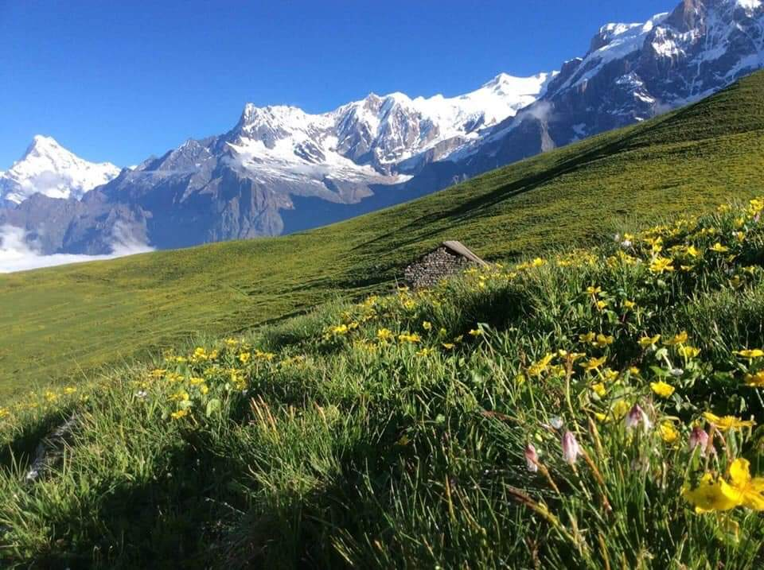
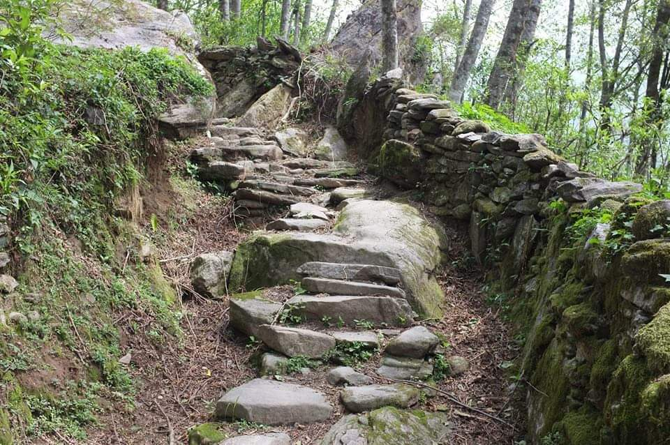
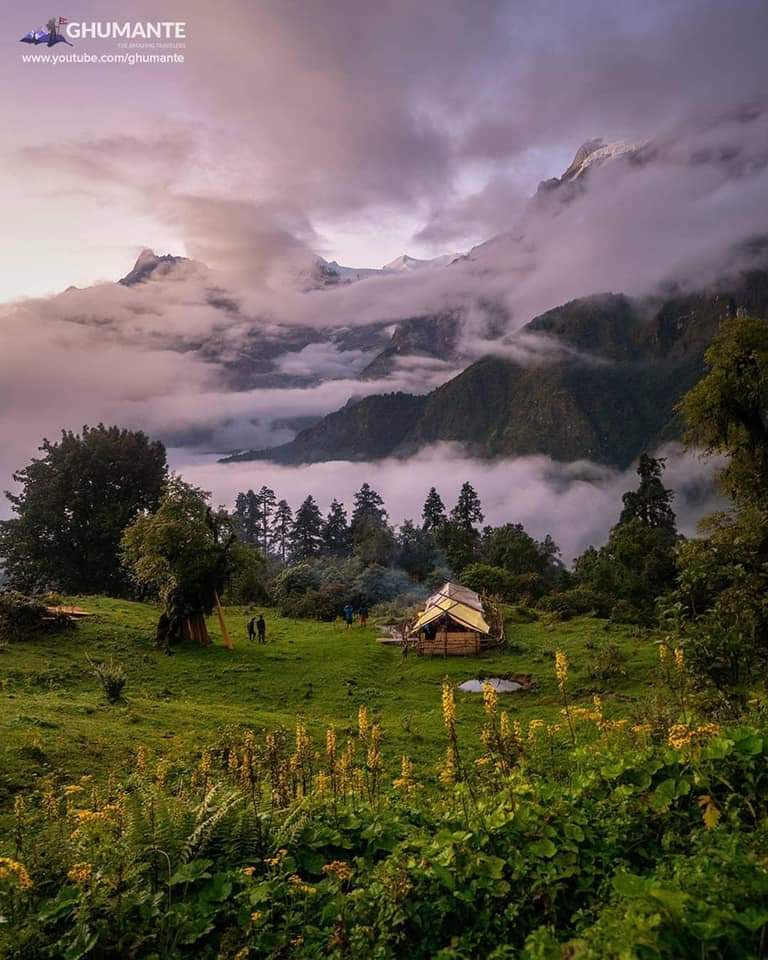
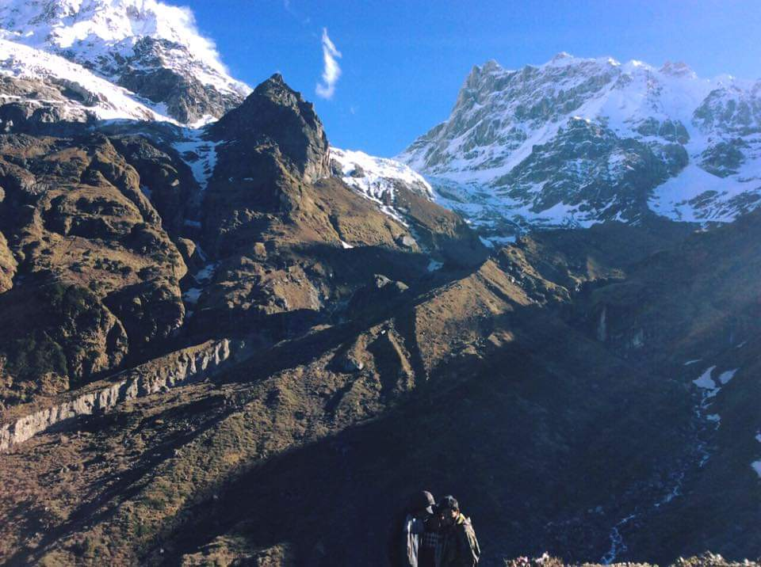
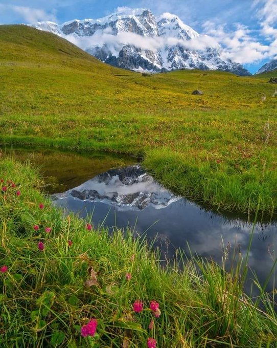
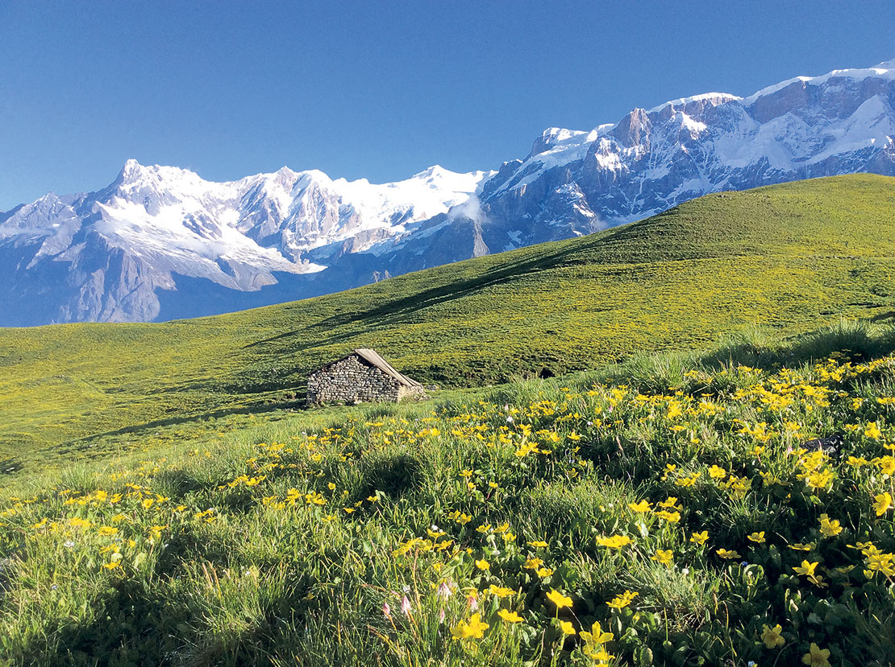
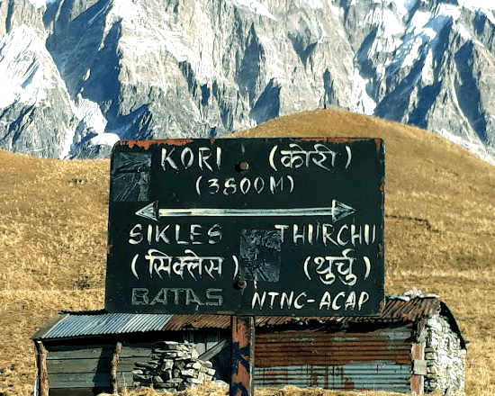
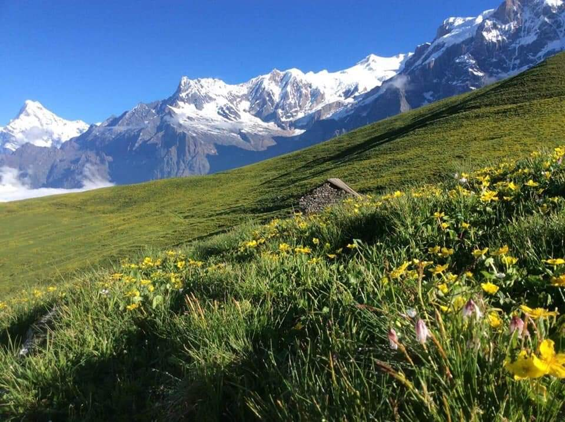
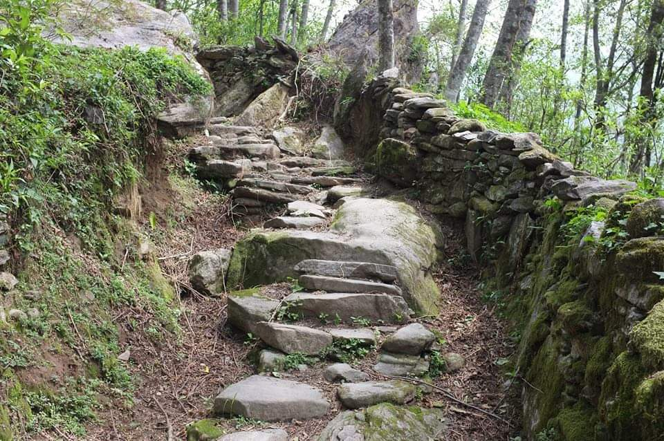
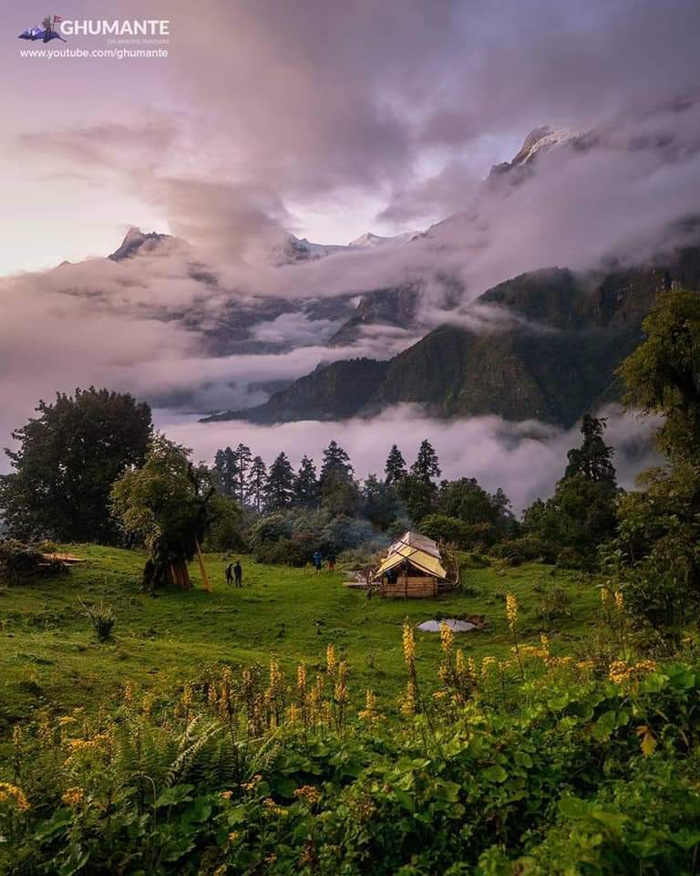
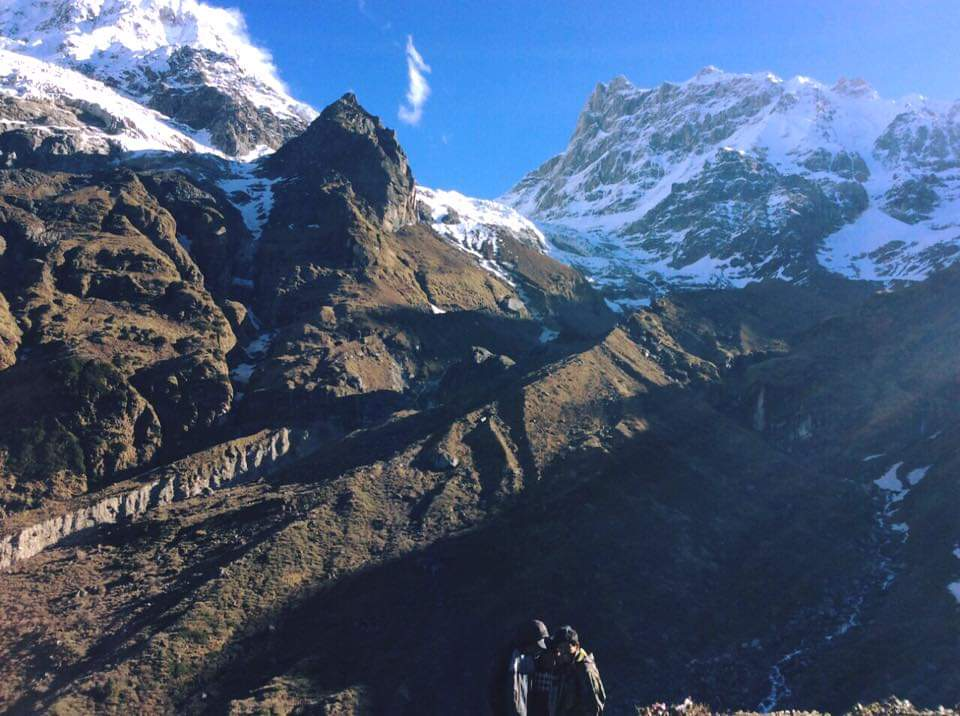
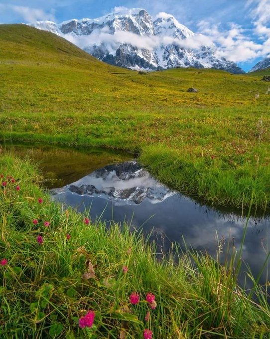
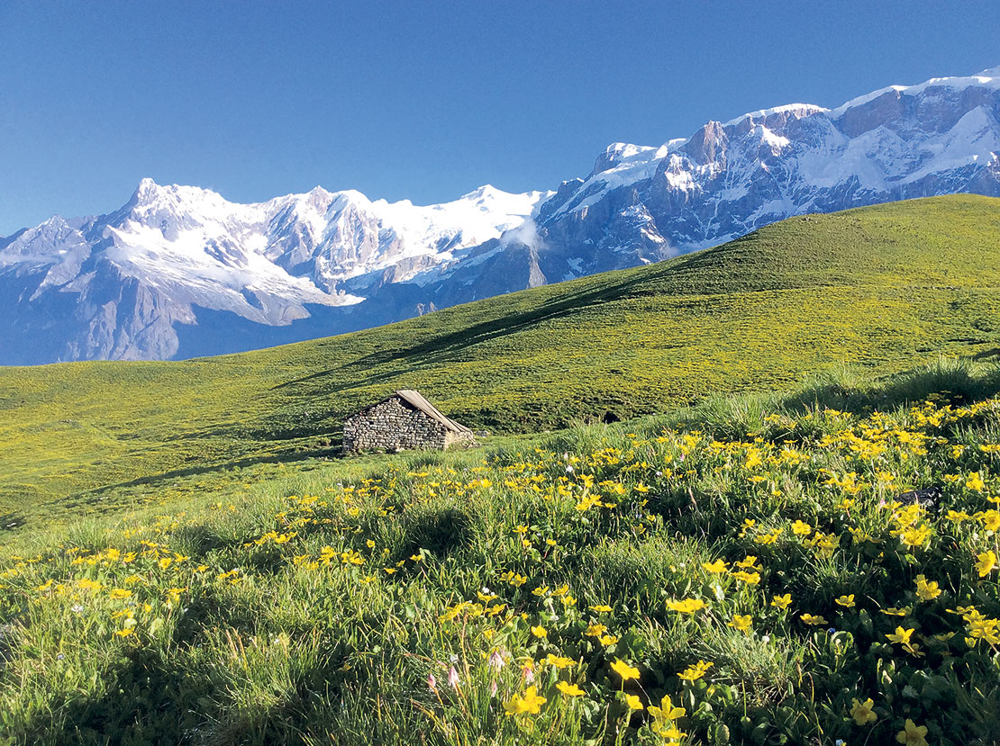
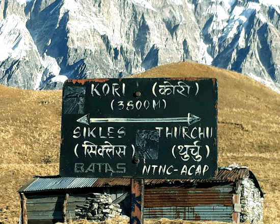
OVERVIEW
Trek is a newly opened Annapurna region eco trek, it is breathtaking Himalaya views observe camping Trek of Nepal, Kori hilltop trek is also called crown of the Sikles village and Tangting Gurung villages. In addition, the Kori trek is situated in the inner Annapurna conservations buffer zone, the border of the Kwholasothar rural municipality Lamjung, and Madi Rural Municipality of Kaski. This trek is totally off the beaten track comparing with Annapurna Base camp and the Mardi Himal trek.
Kori trek is 3,800 m above sea level a wilderness area camping trek, which is spectacular landscapes, nature eco trails route, dense rhododendrons forest, and mostly ascent trails.
Cattle pastures Kori is one of the beautiful places for the cattle pastures in the monsoon for green grass, the peoples from Sikles village and Tangting village’s Buffalo, cow, and sheep’s main pastures. Religious and culture this area has been inhabited by only ghale and Gurung cast peoples, their main religion is Buddhism and Bon Po who worship nature and Total deity, Gurung and Ghale have Isolated cultural dress, languages than other casts of Nepal.
Dudh Pokhari Holi Lake there are separating trekking trails also to the Syange and continues to the Annapurna circuit, via pass through Dudh Pokhari lake, the Dudh Pokhari is holy Lake, many pilgrims visit the Janaipurnima (full Moon Day) in September month, Dudh Pokhari is the northeast side of Kori Hill. Itinerary In the beginning, Kori Trek starts Drive from Kathmandu to Pokhara (6 to 7 hours, and the next day 3 hours drive from Pokhara to the Sikles beautiful densely Gurung village, which is Gurung and ghale indigenous ethnic Hubs. The rest of the day explores a huge Sikles village. Afterward, HUGU Goth, Kahphuche Lake 2450 m, NOHTHA, and then Kori Danda (3,800 m) this circle trek takes 9 days from Kathmandu to Kathmandu.
The view from the Kori danda the view from the Kori danda would see closely Lamjung Himal 6,988 m, Annapurna II 7,937 m, and Machhapuchhare Mount Fishtail 6,993 m, Manaslu Himal 8,156 m. Trails The trail to Sikles Kori Hill Trek is mostly ascent and descent nature trails, inner dense jungles, moderate hikes, this trek is only doable camping tent trek.